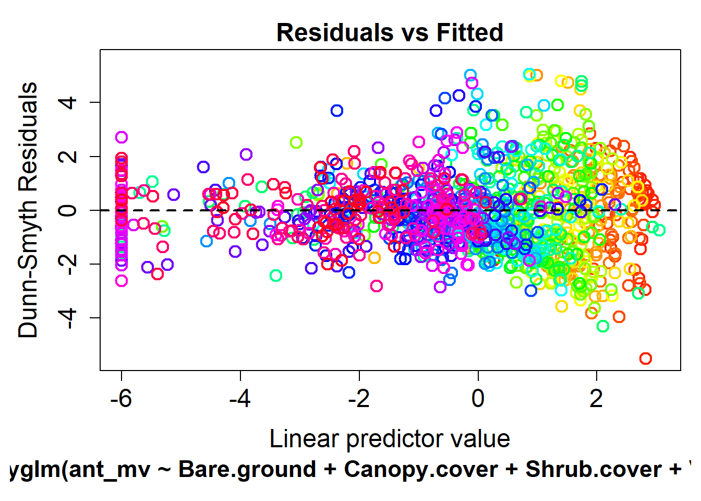
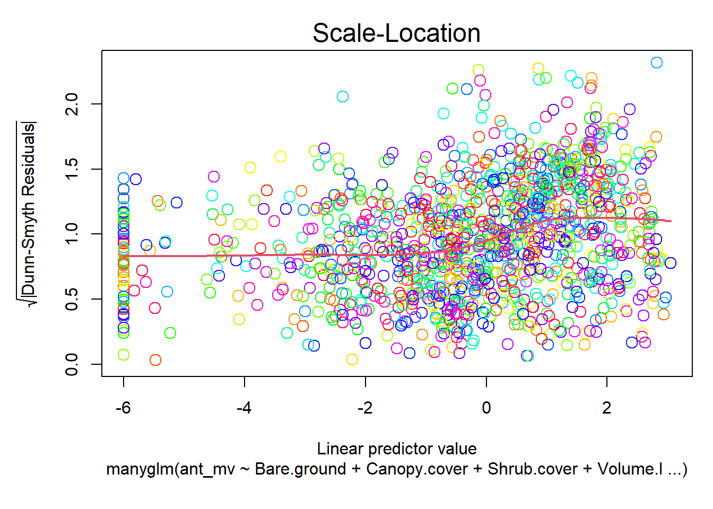
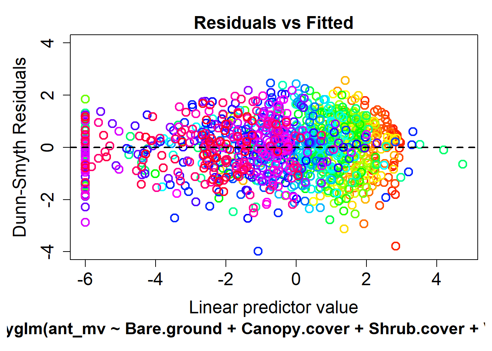
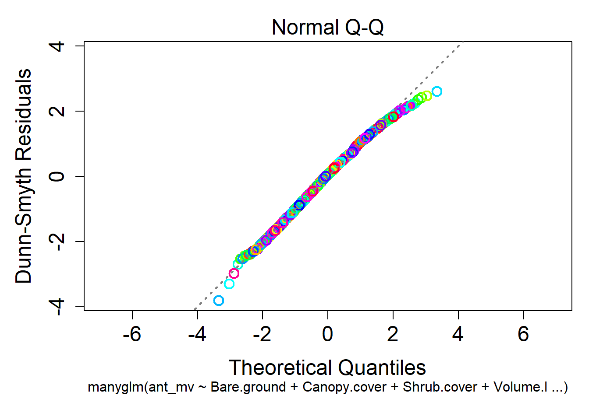
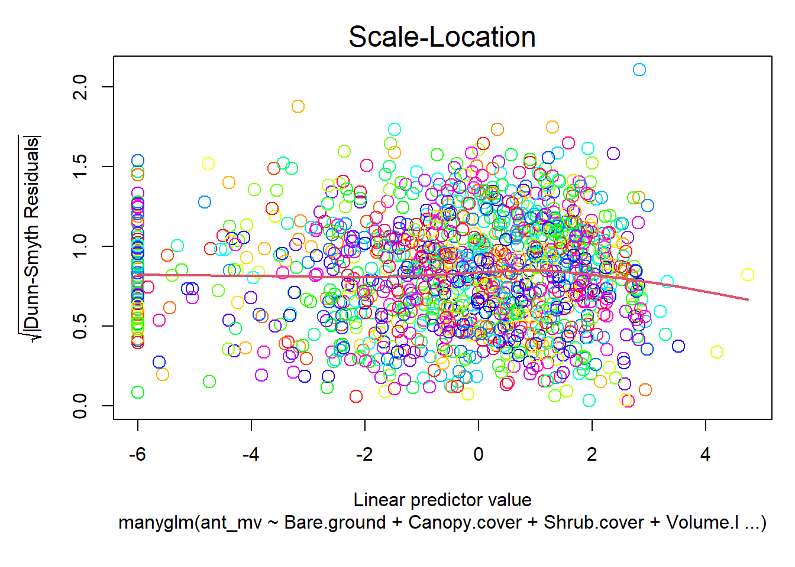
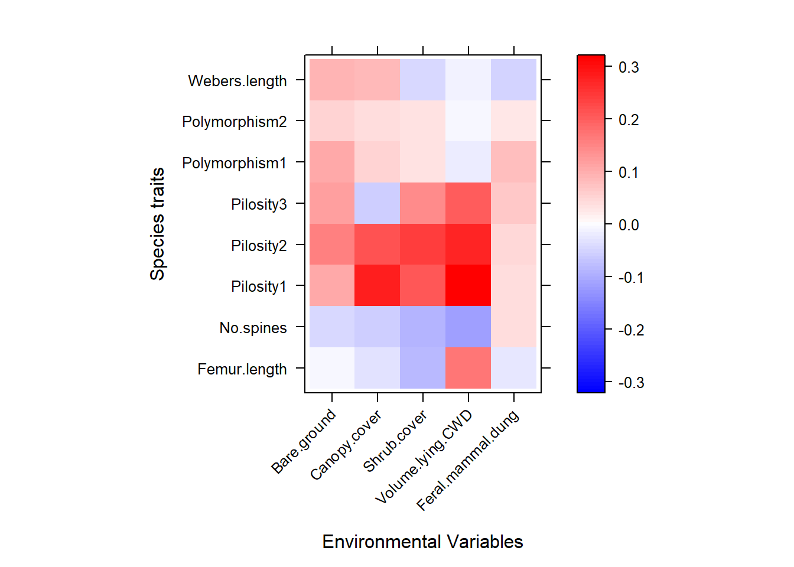

In this post, we will use the mvabund R-package to analyze the antTraits data set. Elsewhere on the blog you can find an analysis of the same data using gllvm and boral.
First of we will setup the analysis by loading the required libraries. If you haven’t already done so, you will need to install the pacman r package before running this code.
pacman::p_load(data.table, dplyr,
ggplot2, lattice, magrittr,
mvabund, stringr, readxl, tidyr)The antTraits data set we will analyze today is included mvabund and gllvm.
data(antTraits)The data set is a list that contains three data frames with self explanatory names.
names(antTraits)## [1] "abund" "env" "traits"abund contains the abundance of 41 epigaeic Australian ant species at 30 sites. For more information on the data try ?antTraits.
## Amblyopone.australis Aphaenogaster.longiceps Camponotus.cinereus.amperei
## 1 0 0 0
## 2 0 0 0
## 3 0 0 0
## 4 4 0 0
## 5 2 0 0
## 6 0 0 1
## Camponotus.claripes Camponotus.consobrinus
## 1 2 1
## 2 0 4
## 3 0 6
## 4 1 1
## 5 4 7
## 6 5 11Note that this data set faces the typical n<p problem of more variables (species) than observations(sites) which makes the estimation of parameters difficult.
As in every analysis with mvabund we start of by converting our data in the mvabund data format and investigating the mean variance plot.
ant_mv <- mvabund(antTraits$abund)
meanvar.plot(ant_mv,
xlab=expression(mu),
ylab = expression(sigma))There is a straight line relationship between variance and mean but since the y axis is scaled logarithmically this indicates an exponential relationship.
First we will fit a Poisson model. As we are not interrested in response correlations we assume that the variance-covariance matrix is the identity matrix \(I\).
mod_p = manyglm(ant_mv ~ .,
data = antTraits$env,
family = "poisson",
cor.type = "I")Let’s have a look at the residuals:
plot(mod_p, which = 1)
plot(mod_p, which = 2)
plot(mod_p, which = 3)
While the third plot looks ok, there is a clear fan shape (residuals get larger with larger values of the linear predictor) and the Q-Q plot suggests that there is overdispersion (small values are smaller and large values larger than you would expect in a normal distribution).
A negative binomial model might be the better choice here.
mod_nb = manyglm(ant_mv ~ .,
data = antTraits$env,
family = "negbinom",
cor.type = "I")How do the residuals look now?
plot(mod_nb, which = 1)
plot(mod_nb, which = 2)
plot(mod_nb, which = 3)
Both, the fan shape and the deviation form the 1:1 line in the Q-Q plot are gone. This mean that the negative-binomial models fits the data better and will be used for the rest if this analysis.
Now we can compute the statistical significance of our predictors for the every individual species and the community as whole with the anova() function.
mod_nb_anova = anova.manyglm(
object = mod_nb,
p.uni = "adjusted",
test = "LR",
resamp = "pit.trap"
)First we can have a look at the community level results
mod_nb_anova$table## Res.Df Df.diff Dev Pr(>Dev)
## (Intercept) 29 NA NA NA
## Bare.ground 28 1 43.84948 0.358
## Canopy.cover 27 1 191.74765 0.001
## Shrub.cover 26 1 54.64440 0.330
## Volume.lying.CWD 25 1 80.53153 0.110
## Feral.mammal.dung 24 1 42.16597 0.745The first column contains the variable names, the second the Residual degrees of freedom (Res.Df). Note how the fact later variables are added to the previous model is made explicit by showing the decreasing residual degrees of freedom. The difference in Degrees of Freedom (Df.diff) shows how many degrees of freedom are necessary to add this variable. The test statistic (here the deviance or likelihood ratio) and lastly the pseudo p-value.
We can see that only the canopy cover has a statistically significant influence on the community composition.
As we have more than 40 species a table is a bad way to inspect the species-level results. Instead lets make a plot showing the p-values of each variable for each species. This will require some reshaping of our data but can be achieved in a few lines of code.
# uni.p holds the univariate p-values. The first row is
# the intercept which we do not care about.
# uni.p is a matrix. To make our life easier for the
# following steps we will convert it into a data frame
plot_data_species = data.frame(mod_nb_anova$uni.p[-1,])
plot_data_species$variable = rownames(plot_data_species)
# Just to make the plot prettier we will replace all the
# dots in variable and taxon names with spaces.
names(plot_data_species) %<>%
str_replace_all(pattern = "\\.",
replacement = "\\ ")
# Here we pivot our data from the wide format (one column
# per taxon) to the long format (one columns which holds
# the taxon and one which the p-value)
pivot_id = which(names(plot_data_species) == "variable")
pivot_cols = names(plot_data_species)[-pivot_id]
plot_data_species %<>% pivot_longer(cols = pivot_cols)
plot_data_species$variable %<>%
str_replace_all(pattern = "\\.",
replacement = "\\ ")
plot_data_species %>%
ggplot(aes(x = value, y = name)) +
geom_point(aes(col = variable)) +
geom_vline(xintercept = 0.05) +
theme(text = element_text(size = 10))In addition to the statistical significance we can inspect the regression coefficients in a level plot.
par(cex.axis=0.5)
a = max(abs(coef(mod_nb)))
colort = colorRampPalette(c("blue", "white", "red"))
plot.tas = levelplot(
t(as.matrix(coef(mod_nb))),
ylab = "",
xlab = "",
col.regions = colort(100),
at = seq(-a, a, length = 100),
scales = list(x = list(rot = 45))
)
print(plot.tas)The problem with this uninformative plot is, it is scaled relative the actually occurring values and one value (Volume.lying.CWD for Cardiocondyla nuda atalanta) is very low. To avoid this we can either use an absolute scale, remove the species or the variable. Below, we use the third quantile instead of the maximum coefficient value to scale the coloring.
a = quantile(abs(coef(mod_nb)), .75)
colort = colorRampPalette(c("blue", "white", "red"))
plot.tas = levelplot(
t(as.matrix(coef(mod_nb))),
ylab = "",
xlab = "",
col.regions = colort(100),
at = seq(-a, a, length = 100),
scales = list(x = list(rot = 45))
)
print(plot.tas)Such plots are of limited use to identify exact coefficient values but especially when there are many species or covariables they can be very handy to identify groups or general trends.
Lastly, we can have a look at the relationship between traits and variables.
trait_model1 = traitglm(
antTraits$abund,
antTraits$env,
antTraits$traits,
method = "manyglm",
family = "negative.binomial"
)
a = max(abs(trait_model1$fourth.corner) )
colort = colorRampPalette(c("blue","white","red"))
plot.4th = levelplot(t(as.matrix(trait_model1$fourth.corner)), xlab="Environmental Variables",
ylab="Species traits", col.regions=colort(100), at=seq(-a, a, length=100),
scales = list( x= list(rot = 45)))
print(plot.4th)